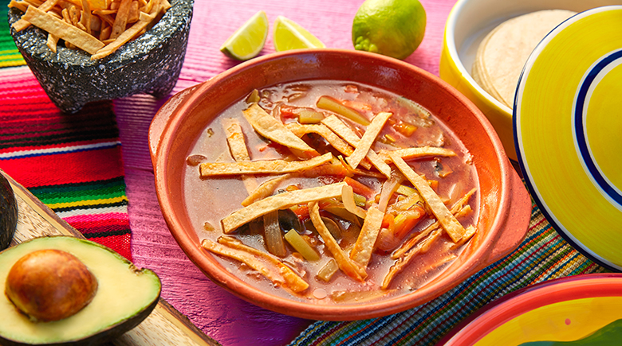

Sopas

Sopa de Tortilla La sopa de tortilla o sopa azteca, es una de las sopas mas famosas y todo un clásico de la cocina mexicana.
Sopa de Tortilla La sopa de tortilla o sopa azteca, es una de las sopas mas famosas y todo un clásico de la cocina mexicana.
Tostamos 4 tomates pera, ¼ de cebolla pelada y 1 diente de ajo pelado en una sartén antiadherente sin nada de aceite. Les vamos dando la vuelta y tostándolos ligeramente por todos los lados. Necesitamos entre 1 y 3 chiles pasilla dependiendo del tamaño. Cortamos el tallo y le sacamos las venas y las semillas para posteriormente cortarlo en finas tiras. Echamos en la sartén un chorrito de aceite de oliva virgen extra y sofreímos el chile pasilla a fuego medio, esto lo volverá tierno.
En un vaso americano echamos un vaso de caldo de pollo para facilitar el triturado de la salsa. A continuación incorporamos los tomates, la cebolla y el ajo. Añadimos también la mitad del chile pasilla que hemos sofrito y un poco de sal. Empezamos a triturar. Incorporamos 2 tortillas de maíz cortadas en trozos. Seguimos triturando, hemos de conseguir una salsa bien fina. Echamos la salsa directamente a la olla e incorporamos el resto del caldo, entre un litro y un litro y medio de caldo, dependiendo de si queréis la sopa más o menos espesa. Removemos y rectificamos de sal si fuera necesario, tapamos y cocinamos durante 15 minutos a fuego medio.
Cortamos en finas tiras 12 tortillas de maíz del día anterior. Las freímos por tandas en abundante aceite de oliva virgen extra. Sacamos sobre un plato con papel absorbente y reservamos.
Calentamos la salsa y añadimos una cucharadita de epazote seco, si tenéis fresco mucho mejor. Removemos bien y dejamos hervir 1 minuto. Emplatamos. Echamos un buen puñado de tiras de tortilla fritas en cada plato. A continuación echamos la sopa, cantidad suficiente para que empape todas las tiras de tortilla. Acompañamos con unos tacos de queso fresco, más tiras de tortilla, un poco del chille pasilla frito que teníamos reservado, unos trozos de aguacate y unas hojas de cilantro fresco.